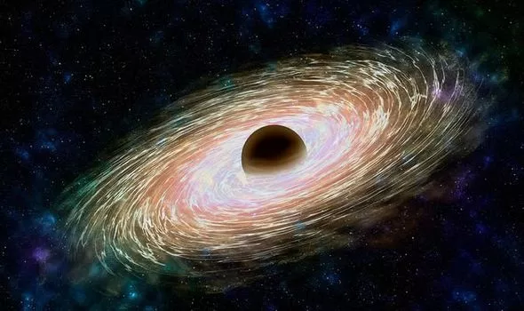

Here are some interesting facts about Black Holes!

SuperMassive black holes can live as long as 10^100 years! Which means 10,000,000,000,000,000,000,000,000,000,000,000,000,000,000,000,000,0
00,000,000,000,000,000,000,000,000,000,000,000,000,000,000,000,000 Years!
Ton 618 is the largest black hole that will possibly ever exist.
It has an immense mass of 66 BILLION solar masses (1 solar mass = our sun's mass and our sun weighs 1,989,000,000,000,000,000,000,000,000,000 kilograms). This gargantuan can comfortably fit 11 solar systems inside it side-by-side.
Smaller black holes are more dangerous because you have a shorter distance to death (the singularity). Whereas in larger black holes, you could probably stay alive for a few hours.
Since primordial black holes are so small, they exist for a few seconds and then evaporate from hawking radiation.
Black holes with tens-of-billions of solar masses grow to be so huge, they deserve their own name.
ULTRAMASSIVE BLACK HOLES!
Black Holes are formed when a really big star is at the end of its life and the outer layers of the star explode into space at quarter of the speed of light! This explosion is called a SUPERNOVA! Then the core of the star collapses into a black hole!